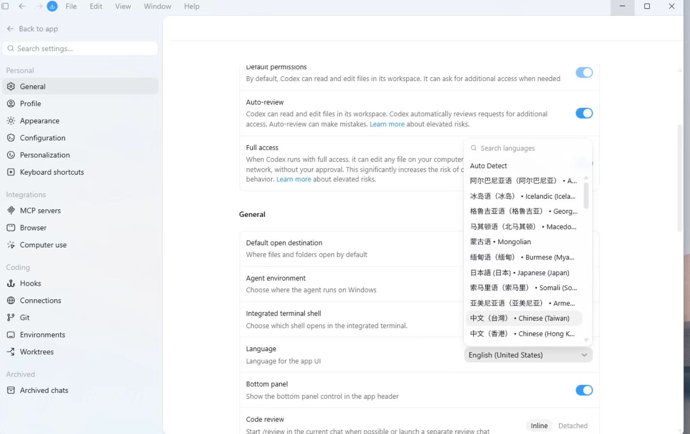

codex使用常见问题
codex界面设置中文 教程
按下面步骤把 Codex 桌面端界面语言切换为中文。

1. 打开 Settings
在 Codex 左下角点击账号菜单，选择 Settings。
2. 进入 General
在左侧设置菜单里选择 General。
3. 找到 Language
在 General 页面向下找到 Language，点击当前语言下拉框。
4. 选择中文
在语言列表里选择中文。截图里可以看到中文选项，例如中文（台湾）或中文（香港）。
5. 重启 Codex
设置完成后，完全退出 Codex，再重新打开。
如果重启后仍然没有生效，切换成科学上网环境后再次重启 Codex。